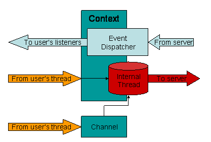
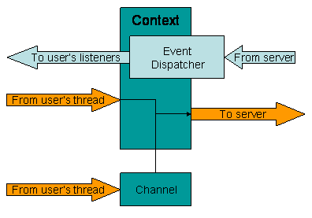

| JCA |
| - EPICS Home Page |
| - Channel Access(3.14) |
| JCA2.1.2 |
| - Download |
| - Installation |
| - API documentation |
| - Tutorial |
| Tutorial | ||||||||||||||||||||||||||||||||||||||||||||
|
||||||||||||||||||||||||||||||||||||||||||||
|
The two main purposes of the JCALibrary is to provide a centralized configuration tool for other JCA objects and to act as a Context factory. The JCALibrary as a configuration tool. The JCALibrary holds a set of read-only Properties. These Properties are loaded at initialization time from different sources.
The properties specified on the command line take precedence over the user's properties which take precedence over the sitewide properties. What these properties represent and are going to be used for really depends on the Objetcs that need them. Some core JCA objects, like JNI_THREAD_SAFE and JNI_SINGLE_THREADED contexts, use them to get their default configuration, ie default communication ports, default thread priorities, etc...
The JCALibrary as a Context factory The JCA package has been design in such a way that the role of
each JCA component has been dissociated from the real implementation.
This design allows the JCA to evolve without breaking it's contract
with the applications using it.
|
||||||||||||||||||||||||||||||||||||||||||||
| 2) A word on JNI_THREAD_SAFE and JNI_SINGLE_THREADED contexts | ||||||||||||||||||||||||||||||||||||||||||||
|


The following table shows the parameters that can be configured for these two type of contexts.
If you do not specify all parameters in the Configuration, default
values will be retreived from the JCALibrary Properties if they
have been defined.
Important: There are two special properties that should be defined for the JNI_XXXX Contexts to work correctly. These properties are platform dependent and are needed to load shared Channel Access libraries and executable.
|
||||||||||||||||||||||||||||||||||||||||||||
| 4) Using standard EPICS system environment variables as configuration | ||||||||||||||||||||||||||||||||||||||||||||
|
gov.aps.jca.jni.JNIContext.jca.use_env=true
|
||||||||||||||||||||||||||||||||||||||||||||
| 3) A real life example | ||||||||||||||||||||||||||||||||||||||||||||
|
|
||||||||||||||||||||||||||||||||||||||||||||
| 4) Defining JCALibrary Properties for your system | ||||||||||||||||||||||||||||||||||||||||||||
|
In this file we are going to define sitewide properties for different
JCA components. # define the location of the epics shared libraries and caRepeater executable gov.aps.jca.jni.epics.win32-x86.library.path= c:/epics/baseR3.14.4/bin/win32-x86 gov.aps.jca.jni.epics.win32-x86.caRepeater.path= c:/epics/baseR3.14.4/bin/win32-x86 gov.aps.jca.jni.epics.linux-x86.library.path= /usr/share/epics/baseR3.14.4/lib/linux-x86 gov.aps.jca.jni.epics.linux-x86.caRepeater.path= /usr/share/epics/baseR3.14.4/bin/linux-x86 # define default values for both JNI_THREAD_SAFE and JNI_SINGLE_THREADED contexts. gov.aps.jca.jni.JNIContext.preemptive_callback= true gov.aps.jca.jni.JNIContext.addr_list= gov.aps.jca.jni.JNIContext.auto_addr_list= true gov.aps.jca.jni.JNIContext.connection_timeout= 30.0 gov.aps.jca.jni.JNIContext.beacon_period= 15.0 gov.aps.jca.jni.JNIContext.repeater_port= 5065 gov.aps.jca.jni.JNIContext.server_port= 5064 gov.aps.jca.jni.JNIContext.max_array_bytes= 16384 # define default values only for JNI_SINGLE_THREADED context gov.aps.jca.jni.SingleThreadedContext.event_dispatcher= gov.aps.jca.event.DirectEventDispatcher # define default values only for JNI_THREAD_SAFE context gov.aps.jca.jni.ThreadSafeContext.event_dispatcher= gov.aps.jca.event.QueuedEventDispatcher gov.aps.jca.jni.ThreadSafeContext.priority= 5 # define default values for QueuedEventDispatcher components gov.aps.jca.event.QueuedEventDispatcher= 5
|
||||||||||||||||||||||||||||||||||||||||||||
| 5) Defining JCALibrary Properties for a particular user | ||||||||||||||||||||||||||||||||||||||||||||
|
In this file we can override default values to match the specific
need of our user toto. # Overwrite the default addr_list to point to a specific ca server gov.aps.jca.jni.JNIContext.addr_list= toto.uses.this.ca.server # overwrite the default auto_addr_list so that network interfaces will not be automatically added to the addr_list. gov.aps.jca.jni.JNIContext.auto_addr_list= false # toto is going to use very large array, so we want to increase the maximum array size. gov.aps.jca.jni.JNIContext.max_array_size= 32768
|
||||||||||||||||||||||||||||||||||||||||||||
| 6) A first program | ||||||||||||||||||||||||||||||||||||||||||||
|
// File: example1.java
public class example1 {
public static void main(String[] args) {
if(args.length!=1) {
System.out.println("usage: java example1 <pvname>");
return;
}
try {
// Get the JCALibrary instance.
JCALibrary jca= JCALibrary.getInstance();
// Create a single threaded context with default configuration values.
Context ctxt= jca.createContext(JCALibrary.JNI_SINGLE_THREADED);
// Display basic information about the context.
ctxt.printInfo();
// Create the Channel to connect to the PV.
Channel ch= ctxt.createChannel(args[0]);
// send the request and wait 5.0 seconds for the channel to connect to the PV.
ctxt.pendIO(5.0);
// If we're here, then everything went fine.
// Display basic information about the channel.
ch.printInfo();
// Disconnect the channel.
ch.destroy();
// Destroy the context.
ctxt.destroy();
} catch(Exception ex) {
System.err.println(ex);
}
}
}
Now, our user toto starts the program with the following command line: java example1 test:my_pv The program creates a context with the default parameters defined
in the JCALibrary configuration files.
|
||||||||||||||||||||||||||||||||||||||||||||
| 7) Overriding default Context parameters | ||||||||||||||||||||||||||||||||||||||||||||
|
// File: example2.java
public class example2 {
public static void main(String[] args) {
if(args.length!=2) {
System.out.println("usage: java example2 server pvname");
return;
}
try {
// Get the JCALibrary instance.
JCALibrary jca= JCALibrary.getInstance();
// Create the Configuration object for our context.
DefaultConfiguration conf= new DefaultConfiguration("myContext");
// Define the context class.
conf.addAttribute("class", JCALibrary.JNI_SINGLE_THREADED);
// Define the addr_list
conf.addAttribute("addr_list", args[0]);
// Now, we'll create a context with this configuration.
Context ctxt= jca.createContext(conf);
// Do whatever you want with this context.
...
} catch( Exception ex) {
System.err.println(ex);
}
}
}
|
||||||||||||||||||||||||||||||||||||||||||||